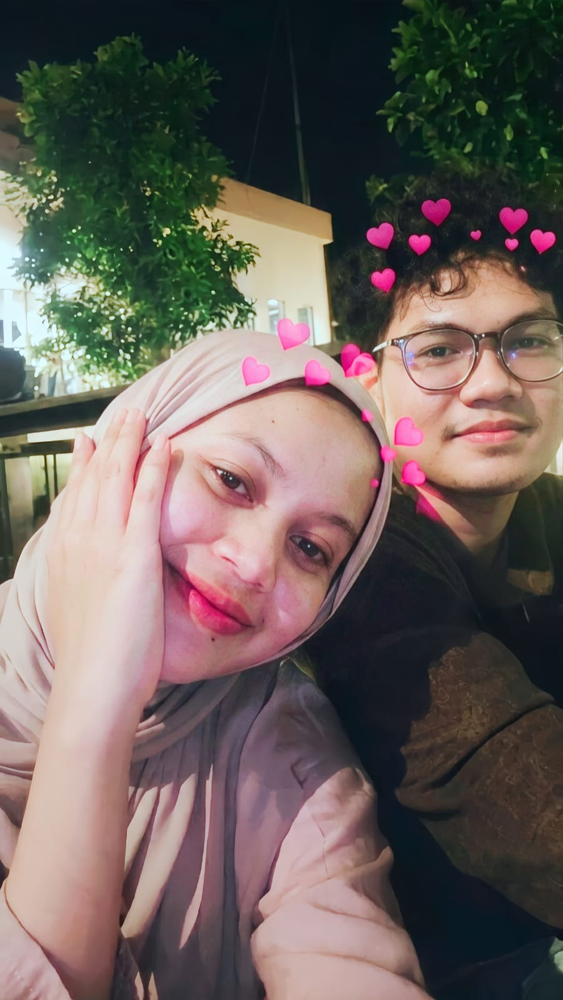
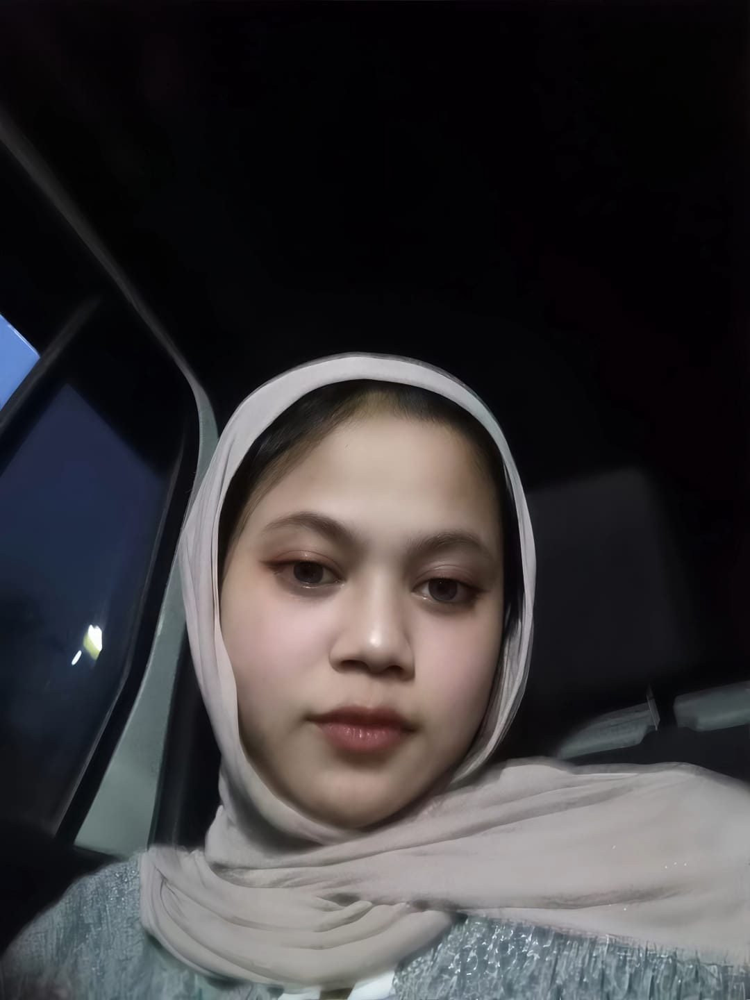
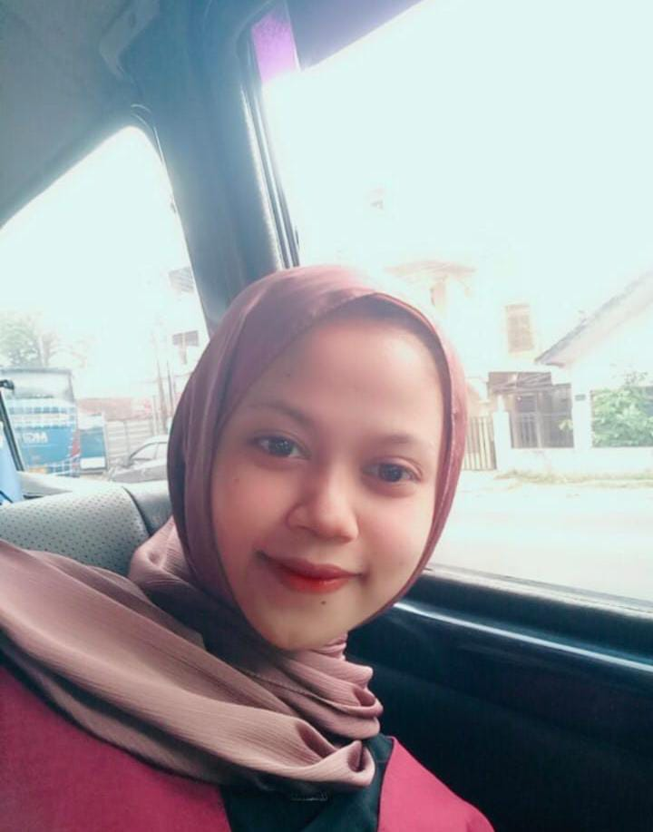
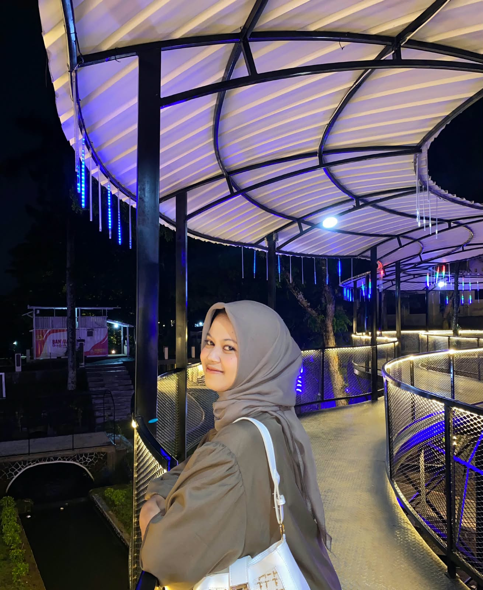

Our Little Story, Our Beautiful Memories
Sebuah tempat kecil untuk menyimpan cerita kita.
Walaupun jarak memisahkan kita, aku ingin kamu tahu bahwa setiap kenangan bersama kamu selalu punya tempat istimewa di hatiku. Website kecil ini aku buat khusus untuk kita.
Empat foto, banyak cerita, dan satu orang yang selalu aku sayang.

ini awal aku ketemu ndut aku yang ternyata aslinya cantik banget loh 💕

liat liat muka nya sinis banget kan tapi sekali senyum coklat aja kalah manisnya 🌷

ini foto sebelum khodam huek hueknya keluar loh 🥰

senyum ibu guru agama emang gada lawan nya muaaaaaanis banget ❤️
Awalnya, saat sedang gabut, aku iseng bermain Telegram.Awalnya memang terasa membosankan dan sama sekali tidak menarik perhatianku. Namun, tiba-tiba aku tidak sengaja bertemu dengan seorang cewek yang sedang patah hati. 🥺 Dari ceritanya, terlihat jelas bahwa dia masih sulit melupakan masa lalunya. Awalnya, aku hanya berniat menjadi pendengar bagi semua ceritanya. Namun, semakin lama kami mengobrol, aku justru menemukan sesuatu yang berbeda dari dirinya. Ternyata, dia adalah seseorang yang sangat baik. 🥰 Bahkan setelah aku menceritakan berbagai sifat buruk dan masa laluku, dia tetap bisa menerimaku. Bukan malah menjauh, dia justru memberikan semangat kepadaku. ❤️ Sesuatu yang jarang aku dapatkan dari orang-orang sebelumnya. Sebab, kebanyakan dari mereka memilih menjauh setelah mengetahui sisi buruk masa laluku. Seiring berjalannya waktu, meskipun hanya melalui obrolan jarak jauh, entah kenapa aku mulai merasa nyaman saat berbicara dengannya. 🤍 Sampai akhirnya, aku memberanikan diri untuk mengungkapkan perasaanku. Ternyata, aku mendapatkan penolakan. Hahaha. 😭😂 Tapi tidak apa-apa, aku bisa memahami keadaannya. Seseorang yang pernah tulus mencintai, tetapi dikhianati, tentu tidak mudah untuk kembali membuka hati. 🥀 Mungkin masih ada kenangan masa lalu yang belum sepenuhnya bisa dia lepaskan. Namun, sekarang aku tidak ingin terlalu memikirkan perasaanku sendiri. Aku justru lebih tertarik melihat dia perlahan-lahan meraih semua harapan dan impian yang selama ini dia inginkan. ✨ Entah kenapa, melihat dia bahagia dan berhasil menggapai apa yang diimpikannya juga bisa membuatku ikut bahagia. 🥹💗 Semoga aku masih diberi kesempatan untuk terus melihat Ndut tersenyum, bahagia, dan berhasil meraih semua yang dia impikan. 🌷 Semoga kebahagiaannya tidak berhenti hari ini saja, tetapi terus berlanjut sampai hari-hari berikutnya, sampai tahun-tahun berikutnya, bahkan sampai masa depan yang jauh. Pokoknya, aku berharap bisa terus melihat Ndut bahagia. Depan, depan, depan, sampai masa depan yaaaaw. 🫶🏻💕🌻.
Saat pertama kali aku berkenalan dengan Ndut yang manis ini, dia pernah bilang kalau dirinya berasal dari Sukabumi. Awalnya, aku sebenarnya tidak terlalu mempermasalahkan soal jarak itu, karena dalam pikiranku mungkin obrolan kami hanya akan bertahan seminggu, setelah itu perlahan-lahan menjadi asing seperti kebanyakan orang yang pernah aku temui. Tapi ternyata, perkiraanku salah. Tidak pernah kusangka obrolan sederhana yang awalnya hanya iseng-iseng bisa bertahan sampai sejauh ini. Bahkan, sekarang ada seseorang dari tempat yang jauh yang kehadirannya begitu berarti dalam hari-hariku. 🥺❤️ Namun, semakin lama aku mengenalnya, semakin aku sadar kalau jarak ternyata bukan hal yang sederhana. Dulu aku tidak terlalu memikirkannya, tetapi sekarang justru mulai membenci jarak yang memisahkan kita. Rasanya ada tembok besar yang sangat tinggi di antara kita, yang membuatku hanya bisa melihat senyumnya lewat layar, mendengar ceritanya dari kejauhan, dan menahan keinginan untuk bertemu secara langsung. Kadang aku membayangkan betapa menyenangkannya kalau suatu saat nanti kita tidak perlu lagi mengandalkan layar untuk saling melihat, tidak perlu lagi menunggu balasan pesan untuk tahu kabar satu sama lain, dan bisa duduk berdua sambil bercerita tentang banyak hal. Semoga suatu hari nanti jarak yang sekarang terasa begitu jauh ini hanya menjadi cerita masa lalu yang bisa kita tertawakan bersama. Aamiin. 🥹🫶🏻💕.
Maaf yaa, sayang. 🥺❤️ Aku sadar akhir-akhir ini aku sering membuat kamu sedih, bahkan mungkin lebih banyak membuat air mata kamu jatuh daripada memberikan kebahagiaan. Terkadang aku berpikir, jangan-jangan memang aku yang menjadi masalah dalam hubungan ini. Maaf karena sikap dan kelakuanku sering membuat kamu kecewa. Aku tahu kamu juga punya harapan tentang hubungan yang menyenangkan, penuh perhatian, dan membuatmu bahagia, tetapi mungkin selama ini aku justru belum bisa memberikan semua itu. Aku tidak pernah berniat membuatmu merasa jauh dari kebahagiaan yang kamu inginkan. Aku masih harus banyak belajar untuk memahami perasaanmu dan memperbaiki diriku sendiri. Aku ingin menjadi seseorang yang bisa membuatmu tersenyum, bukan justru menjadi alasan di balik air mata kamu. Maaf yaa, Ndut. Jangan bosan menghadapi aku yang masih banyak kurangnya ini. Aku juga ingin terus belajar menjadi lebih baik untuk kita. 🥹🫂❤️.